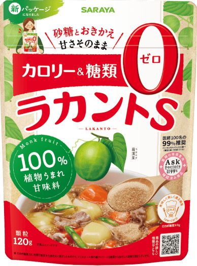

閲覧にはパスワードが必要です
あなたの糖質疲労度は…
説明
※ 本チェックは医学的な診断ではありません。生活習慣を振り返るための簡易チェックです。
気になる症状が続く場合は医療機関にご相談ください。
がまんは続きません。続くのは「置きかえ」です。
いつも使っている砂糖を替えるだけなら、今日の夕飯から始められます。
そこで使えるのが、植物由来の甘味料「ラカント」。

「ラカント」は、中国・桂林地方の山岳地帯にのみ育つウリ科の植物「羅漢果（ラカンカ）」の高純度エキスと、
とうもろこし由来の発酵甘味料エリスリトールからつくられた自然派甘味料。
砂糖と同じ甘さでそのまま使えて、カロリーゼロ・ロカボ糖質ゼロ。加熱しても甘さが変わらないので、
煮物にも焼き菓子にも使えます。